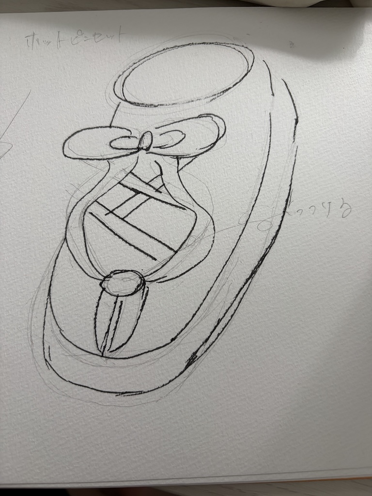
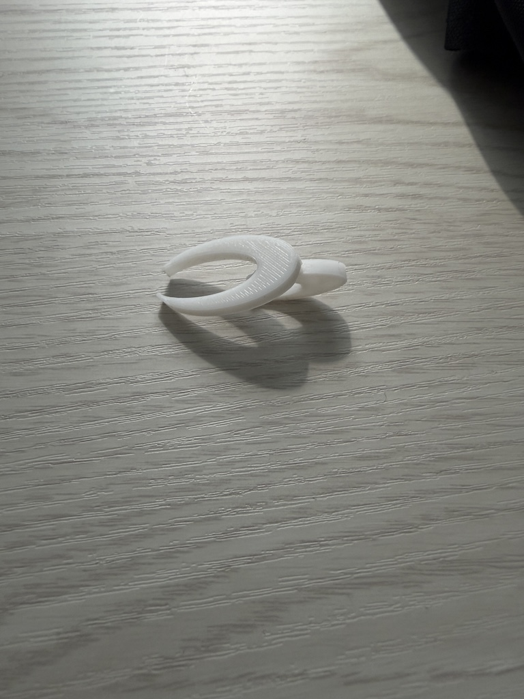
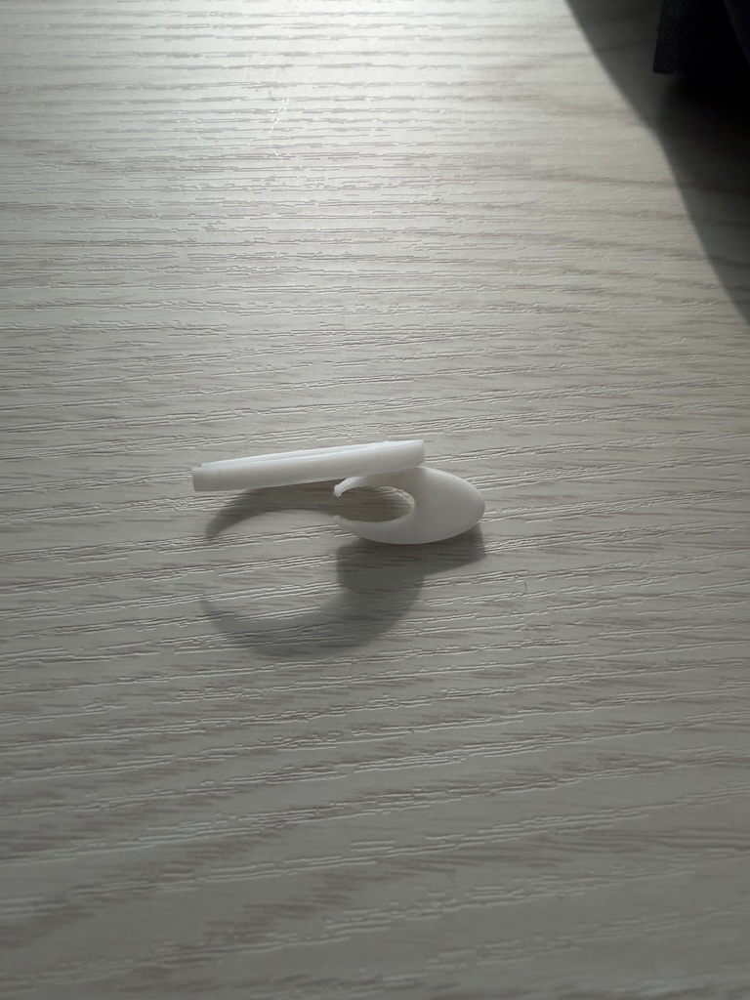
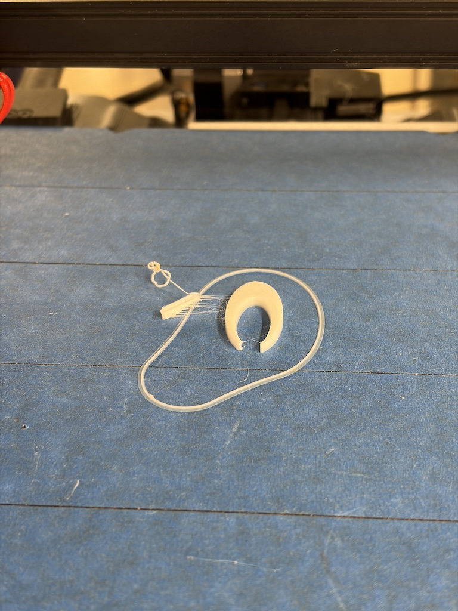
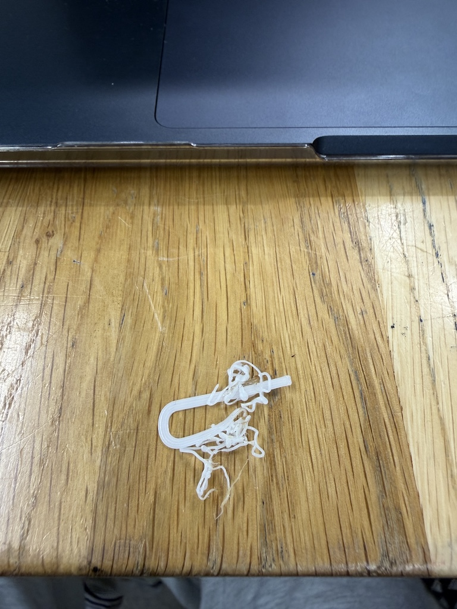

靴にくっつけるピンセット
＜スケッチ・完成写真＞

構想段階のスケッチ

完成したピンセット

横からの写真
＜stlファイル＞
ピンセット本体
パーツ試作１
パーツ試作２
パーツ完成形
＜作品の説明＞
この作品は自分の靴の靴紐にパーツを取り付けることで、利用できるピンセットとなっています。
手を使わないという新たなピンセットの利用方法となっています。
下の写真のように靴紐がある靴にはすべて取り付けることが出来ます。
＜なぜこの作品を作ろうと思ったのか＞
私がこのピンセットを作ろうと思ったのは、ある日常の動作がきっかけです。
授業中に消しゴムやシャーペンを落とした経験は誰しもがあると思います。その時に、立ち上って取りに行く人・座ったまま
手足を器用に使って取る人がいると思います。
私は小学生の頃から後者でした。
そのため、座ったまま落としたものを取るという行為に確実性が欲しいと感じました。
そして今回の課題であるピンセット制作で、靴にピンセットを工夫して取り付けることができれば確実性が上がるのではないかと
考え制作に至りました。
＜制作プロセスで調べたこと＞
制作過程において、私はパーツをデザインをするまでは大きな壁にぶつかることなく順調に進めることが出来ました。
しかし、パーツのデザインが完成し3Dプリンターで出力するときに問題が起きました。

上の写真がstlファイルの「パーツ試作1」を出力したときの様子です。
パーツがかなり小さく、細かったため浮いてしまいました。

上の写真がstlファイルの「パーツ試作２」を出力したときの様子です。
パーツを少し太く、大きくしましたが失敗してしました。
このような結果から、完成形では楕円から工夫して型をつくり成功することが出来ました。
cssとはwebページにおける見た目や文字のフォント、色などの装飾の設定をする言語です。
htmlはwebページの構造を記述する言語のためcssとは役割が異なりますが, webページを作るうえでどちらも基本的な言語です。
[参考サイト]
HTMLとは？初心者向けに基礎知識を分かりやすく解説